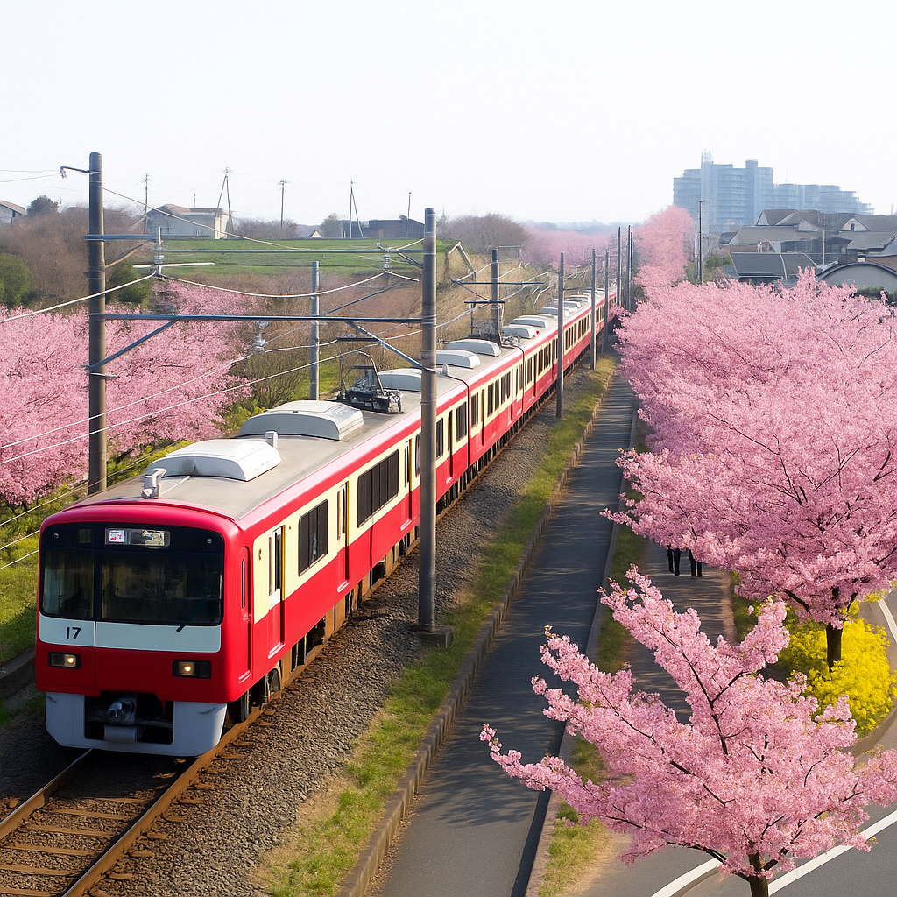
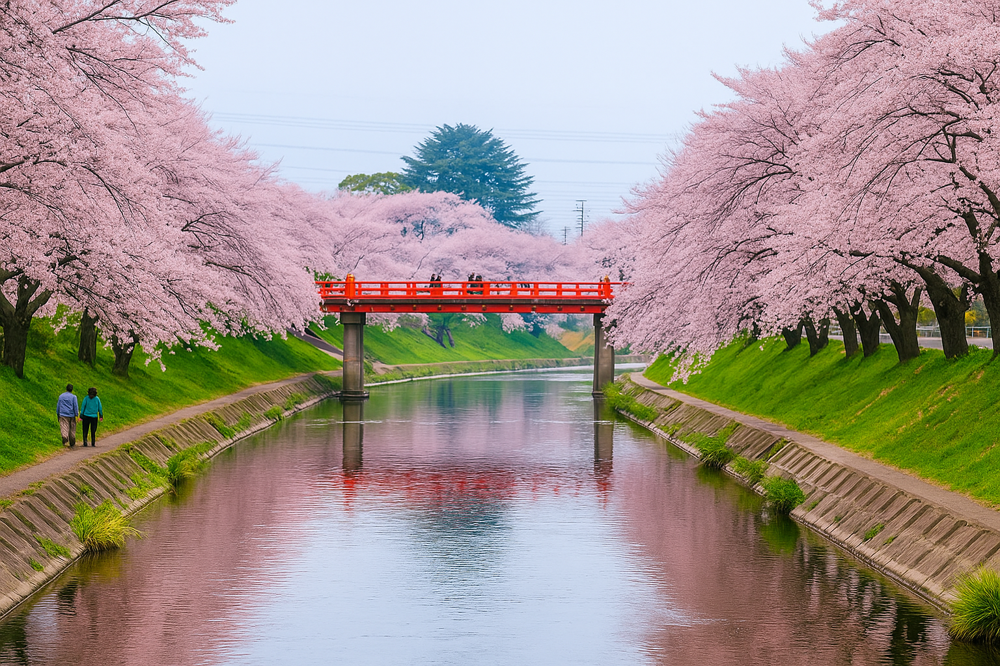
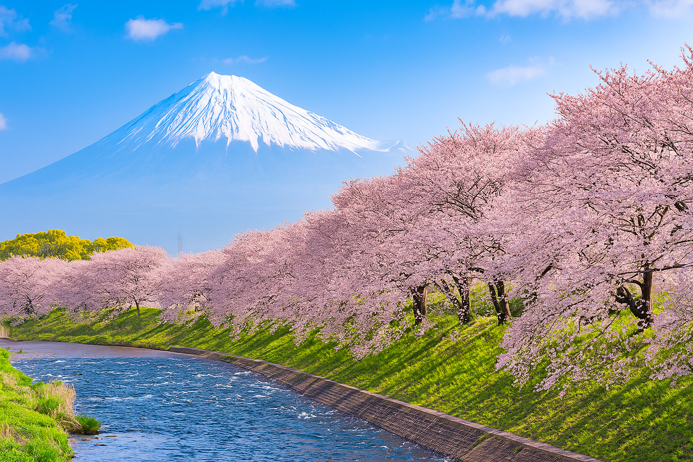
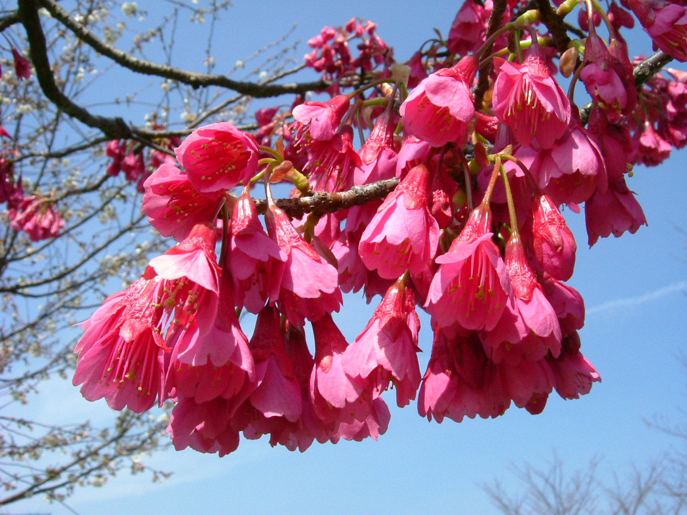
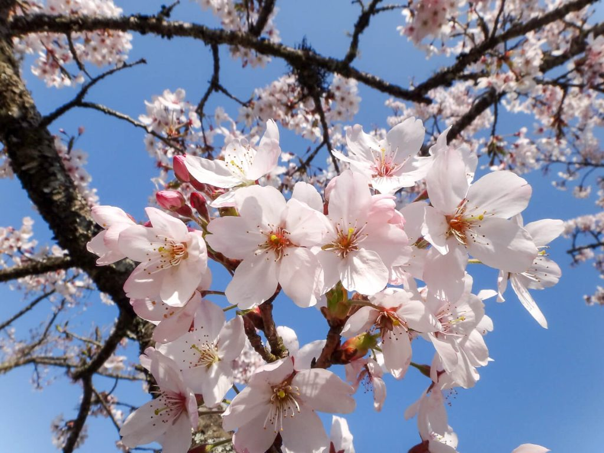
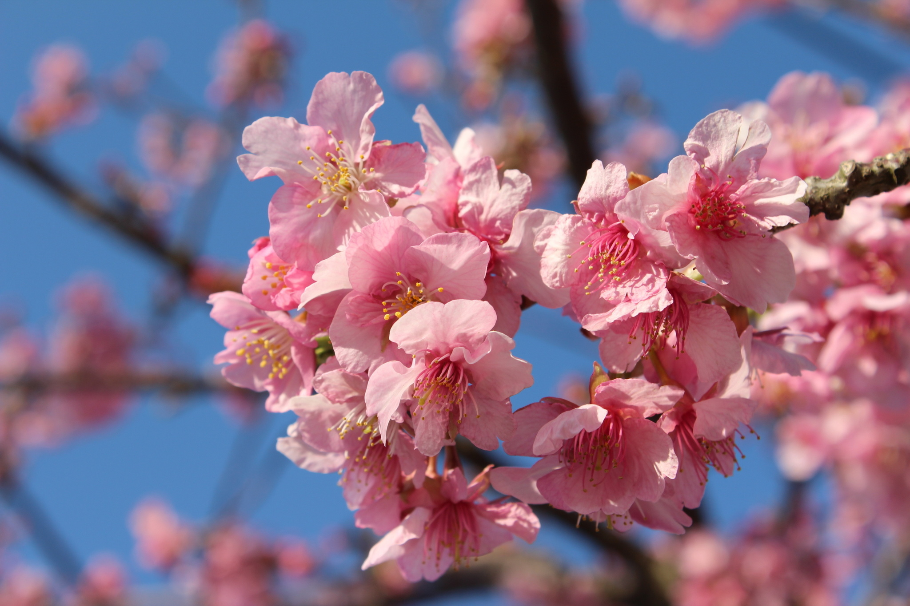

文化歷史
日本的賞櫻文化源遠流長，可追溯至奈良時代，當時賞花的主角是梅花。到了平安時代，櫻花逐漸取代梅花，成為貴族間的重要活動。 江戶時代後，賞櫻進一步普及至民間，成為春季重要的戶外盛事。最早的賞花紀錄，是嵯峨天皇在京都御所舉辦的花宴。當時人們吟詩讚美櫻花的纖弱與短暫， 視其為生命的象徵——短暫卻絢爛。這種生命觀深植於日本文化之中，認為在最燦爛時刻凋零，勝過平淡老去。平安時代的詩人經常因春櫻盛開，而感嘆人生苦短。

熱門景點
日本賞櫻景點眾多，其中京都府立植物園、哲學之道、姬路城、代代木公園、河津、沖繩、弘前城公園、井之頭公園等地最受歡迎。 這些地點各具特色，有的以古城與櫻花相映成趣，有的以河畔櫻花聞名，也有都市中的絕佳賞櫻去處。本網站將介紹前十大熱門區域，並提供購票系統服務。


櫻花美食
日日本的櫻花季，除了賞花，還有許多以櫻花為主題的特色美食。這些食物不僅外觀精美，更融入了櫻花的香氣和風味，為賞櫻體驗增添了更多樂趣。 常見的櫻花相關食物包括：櫻餅、花見糰子、櫻花茶、櫻花口味的零食和點心，以及各種櫻花主題的飲品和便當。


櫻花品種
日本的櫻花品種繁多，其中最常見的有染井吉野櫻、枝垂櫻、河津櫻、大島櫻、山櫻、八重櫻等。 這些品種各具特色，差異涵蓋開花時間、花色、花瓣形狀、花期長短甚至香氣。其中染井吉野櫻最為普遍，花色淡粉、盛開時幾乎看不到葉子，帶來雪白花海般的視覺震撼;而枝垂櫻以枝條如瀑布般垂墜著花朵聞名，優雅動人;河津櫻則以早開著稱，是日本春天最早綻放的櫻花之一。


